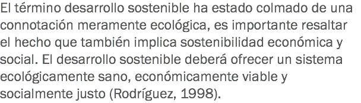

Gestionar la sostenibilidad
Desarrollo sostenible

Haz clic en
Regresar
para volver al inicio.


![Para que el desarrollo sea sostenible debe ser continuo, debe permanecer. Para cualquier producto que vayas a utilizar dentro del hotel, como paneles solares para generación de energía o calentadores solares de agua, debes asegurarte de que su funcionamiento va a ser por mucho tiempo para que puedas medir los beneficios efectuados. Debes comprender que entre menos recursos, es más cara la materia prima, por lo tanto ahora debes pensar en términos de un desarrollo sostenible, para utilizar más recursos ecológicos que no dañen al medio ambiente y que tampoco dañen nuestras costumbres.](images/u658-19.png)